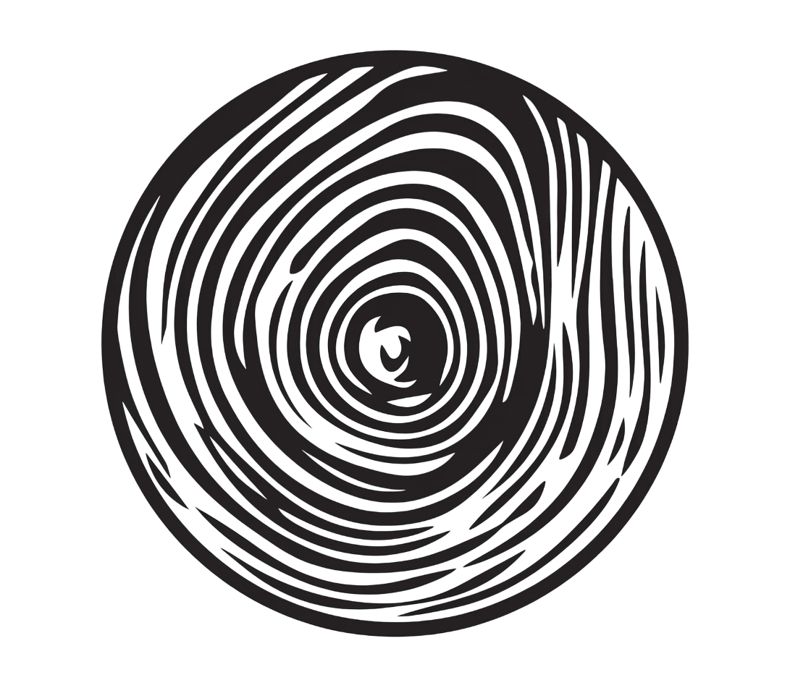
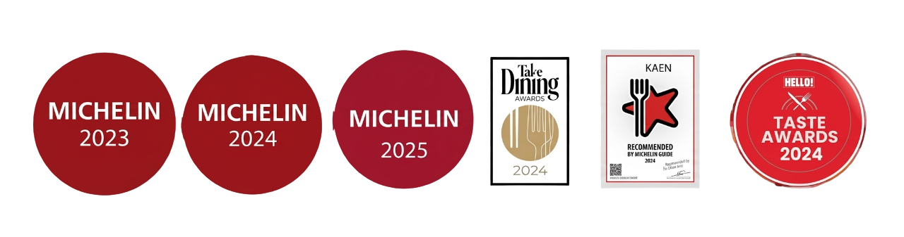
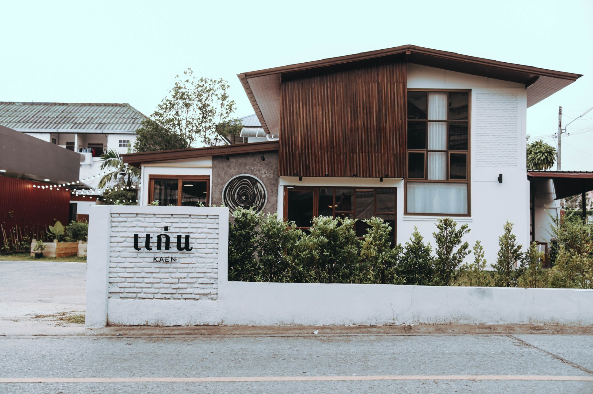
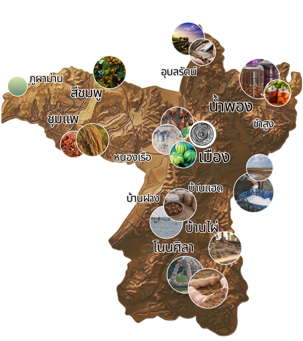

แก่น
KAEN


KAEN

แก่นที่ ๑... แก่นแท้ หรือใจความสำคัญ คือการใชวัตถุดิบท้องถิ่น
แก่นที่ ๒... แก่นไม้ ทางร้านมีไม้เป็นองค์ประกอบหลัก
แก่นที่ ๓... แก่นแก้ว ความแก่นเฟี้ยวของเชฟ ที่ใช้รังสรรค์เมนูอาหาร
แก่นที่ ๔... ภาษาอีสาน มีความหมายว่า อยู่สบาย
แก่นที่ ๕... ขอนแก่น เราอยากเป็นร้านอาหารที่ทำให้คนขอนแก่นรู้สึกภูมิใจ


"เราไม่ได้แค่ทำอาหาร แต่เราพยายามเล่าเรื่องราวของดิน แหล่งน้ำ และผู้คนในขอนแก่นผ่านรสชาติที่แท้จริง"
Chef Paisarn & Chef Jib